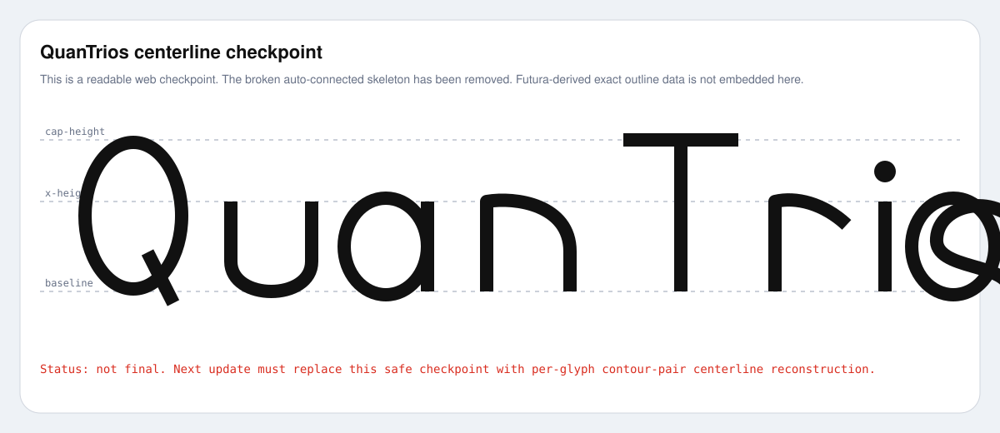

QT project / Futura TTC centerline extraction
QuanTrios
METAFONT
赤＝アップロード済みFutura.ttcから抽出したQuanTrios実外形。黒＝Futura外形から抽出・再構成した中心線候補。フォントファイル自体はGitHubに入れていない。これを以後のweb確認基準にする。

状態: 未完成。 この中心線抽出はweb上で常時確認できるようにした。 次の作業: 1. 自動抽出で崩れているL字/外周なぞりを除去 2. o/O/Q は外周・内周対応から中心線化 3. n/u/r はステム＋肩アーチへ分解 4. a/s は専用テンプレートで再構成 5. 形が改善したら、同じページのSVGを更新し続ける